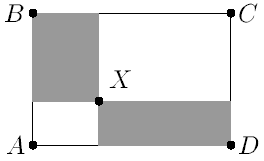
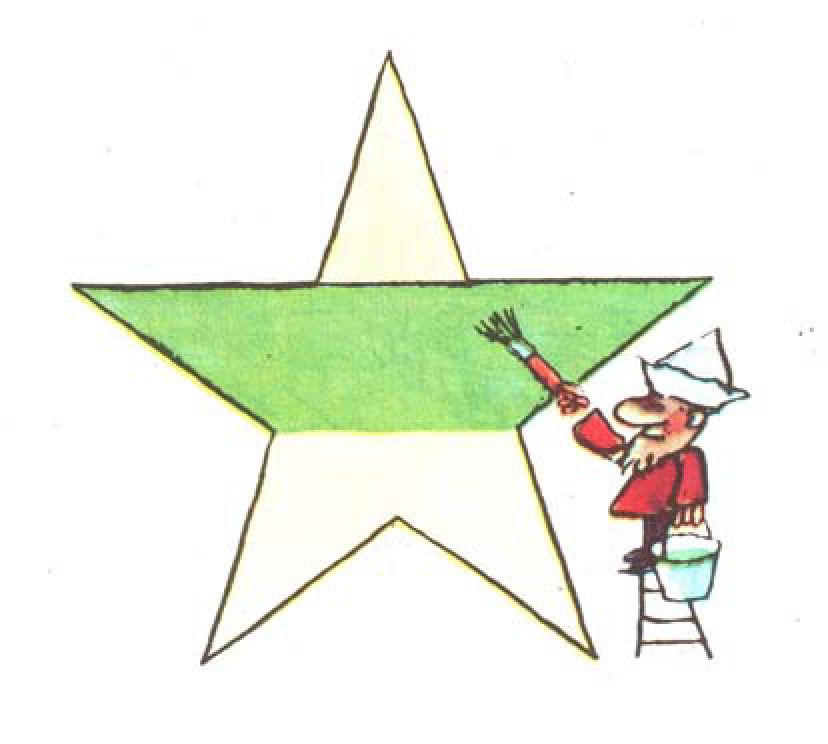

Дальше кружок будет каждую неделю по понедельникам. Перед первым посещение желательно предварительно зарегистрироваться, заполнив анкету https://goo.gl/mNe5fr. Регистрация позволит нам оперативнее наладить работу кружка и избавит от лишней суеты.
Если вы хотите задать вопрос, попросить перевести вас в другую аудиторию (к брату, сестре, другу, подруге и т.д.), перейти с уровня для начинающих на уровень для продолжающих или обратно, высказать предложение по оптимизации нашей работы, пожаловаться на непроставленный плюсик, то смело направляйте письмо по адресу c1819@179.ru (Андрею Юркову).
Формальную информацию о кружке, а также информацию по регистрации и оформлению можно получить на официальной странице кружка.
ВМШ — это Вечерняя Математическая Школа — кружок по математике для 5 и 6 классов в 179-й школе города Москвы. На занятиях кружка решаются и разбираются разнообразные задачи по математике: арифметические, логические, комбинаторные, геометрические... Большую часть времени школьники самостоятельно решают задачи и обсуждают свои решения и идеи с преподавателями. Цель кружка — развитие интереса к математике, знакомство школьников с разными темами и задачами, выходящими за рамки школьной программы. Кружок рассчитан на школьников, которым интересна математика — как на начинающих, которые имеют мало опыта в решении задач, так и на более продвинутых, которые уже имеют какой-то опыт посещения кружков и олимпиад. Однако преподаватели не ставят своей целью помощь в освоении стандартной школьной программы (если таковая вызывает трудности) или специальную подготовку к поступлению в нашу школу.
Вначале школьникам раздаётся листок с основными задачами.
Разрешается решать задачи в любом порядке.
Лучше двигаться от начала задания к концу, а если какая-то задача долго не выходит — пропустить её и вернуться к ней позже.
Если у школьника есть вопрос, или он хочет сдать задачу — он поднимает руку, к нему подходит один из преподавателей и беседует со школьником.
Задачи можно сдавать устно, но всегда полезно иметь хоть какие-то записи — какие-то необходимые рисунки, вычисления.
В середине занятия есть небольшой перерыв для желающих.
Ближе к середине занятия (до или после) у доски разбираются задачи с прошлого раза.
Разбор делается не в начале, чтобы школьники могли сдать задачи, которые они не успели решить на прошлом занятии, но доделали дома.
Попутно даются также пояснения к текущей теме, иногда они делаются и раньше, если тема идёт тяжело.
В общей сложности разговор преподавателя у доски занимает минут 20 из двух часов, остальное время школьники решают задачи и обсуждают их с преподавателями на местах индивидуально.
Школьникам, справившимся с основными задачами, выдаются дополнительные задачи.
Бывает, что у школьника никак не выходит, скажем, всего одна-две задачи из основных, а времени ещё много — тогда ему, при его желании, тоже выдаются дополнительные задачи, чтобы он не зацикливался на одной задаче.
В конце занятия дополнительные задачи могут получить уже все желающие.
Успехи каждого ученика заносятся в специальный кондуит (сданные задачи отмечаются плюсиками).
Мы стараемся не заострять внимание на этих плюсиках, так как цель совсем не в них.
Кондуиты больше нужны нам, чтобы видеть, насколько удачно составлено занятие.
Наш кружок для 5 и 6 классов, но мы не делим школьников по классам.
Вместо этого у нас есть деление начинающие/продолжающие.
Задачи начинающих и продолжающих пересекаются, но у продолжающих нет совсем простых задач, а у начинающих — совсем сложных.
Продолжающих примерно четверть всех школьников.
Ситуация, когда школьник решает 1-2-3-4 задачи за занятие, кажется нам неправильной, поэтому если это происходит в продолжающей группе, мы переводим к начинающим.
Если же школьник в начинающей группе решает по 12-15 задач, то переводим к продолжающим.
Это деление — наше мнение о том, где школьнику будет полезнее заниматься.
Если школьнику или родителям кажется, что лучше к продолжающим (или наоборот), то мы свободно переводим между группами.
Посещающие кружок имеют доступ ко всем занятиям, а также к кондуитам (таблице сданных задач).
Кроме данного кружка в Москве проводится множество других кружков по математике (и другим предметам), например:
Если вы выпускник 57-й или 179-й школы, студент или аспирант мехмата, матфака или физтеха и хотите помочь нам принимать задачи у школьников, то пишите письмо по адресу c1819@179.ru (Андрею Юркову).
Наш кружок для 5 и 6 классов, но мы не делим школьников по классам. Вместо этого у нас есть деление начинающие/продолжающие. Задачи начинающих и продолжающих пересекаются, но у продолжающих нет совсем простых задач, а у начинающих — совсем сложных. Продолжающих примерно четверть всех школьников. Ситуация, когда школьник решает 1-2-3-4 задачи за занятие, кажется нам неправильной, поэтому если это происходит в продолжающей группе, мы переводим к начинающим. Если же школьник в начинающей группе решает по 12-15 задач, то переводим к продолжающим. Это деление — наше мнение о том, где школьнику будет полезнее заниматься. Если школьнику или родителям кажется, что лучше к продолжающим (или наоборот), то мы свободно переводим между группами. Задачи для начинающий можно найти по ссылке.
Задача 1.1. Алёша задумал число. Он прибавил к нему 5, потом разделил сумму на 3, умножил на 4, отнял 6, разделил на 7 и получил 2. Какое число задумал Алёша?
Задача 1.2.
а)
На окружности даны 100 точек.
Кузнечик прыгает по точкам через одну по часовой стрелке.
Сколько всего точек он посетит?
А если он прыгает через
б)
3;
в)
7;
г)
2 точки?
Задача 1.3.
Киты и слоны сидят за круглым столом, всего 100 животных, причем китов больше половины. Верно ли, что:
а)
найдутся кит и слон, между которыми ровно одно животное;
б)
найдутся кит и слон, между которыми ровно два животных;
в)
найдутся кит и слон, между которыми ровно семь животных;
г)
найдутся два кита, между которыми ровно трое животных?
Задача 1.4. 
Задача 1.5.
Дана белая полоска
а)
1 × 15;
б)
1 × 20 клеток. Двое по очереди окрашивают 1 или 2 соседние белые клетки.
Проигрывает тот, кому нечего окрашивать.
Кто может обеспечить себе победу?
влево. Проигрывает тот, кто не может сделать ход. Кто может обеспечить себе победу?
Задача 1.6. Найдите возможные значения дроби К · А · Р · Л · С · О · Н В · А · Р · Е · Н · Ь · Е (разные буквы заменяют разные цифры).
Задача 1.7.
а)
Робот за ход сдвигается на шахматной доске 8 × 8 из клетки в соседнюю (по стороне). Некто отметил на доске две клетки А и Б.
Хватит ли роботу 14 ходов, чтобы попасть из А в Б?
б)
Всегда ли хватит 13?
в)
В каждую клетку доски 8 × 8 записали по числу от 1 до 64
(без повторений). Докажите: найдутся две соседние (по стороне) клетки,
числа в которых отличаются хотя бы на 5.
Задача 1.8. Несколько ребят пили чай с 36 конфетами. Дима сказал: «Я сумею так разделить конфеты, что у каждого будет не больше 5 конфет». Вова ответил: «А я могу так разделить конфеты, что каждому хоть что-то достанется и при этом число конфет у всех будет разным!». Сколько ребят пили чай?
Дополнительные задачи
Задача 1.9. Ваня, Витя и Митя играют в настольный теннис. В каждой партии играют два школьника. Тот, кто не принимает участия в данной партии, в следующей игре играет с победителем (ничьих в теннисе не бывает). В результате Ваня сыграл 10 партий, а Витя — 21. Сколько партий сыграл Митя?
Задача 1.10. Докажите, что у правильной пятиконечной звезды, изображённой на рисунке справа, закрашена ровно половина площади.
Задача 1.11.
а)
Король объявил сотне мудрецов, что устроит им
испытание. Мудрецам завяжут глаза, наденут каждому
на голову чёрный, белый или синий колпак, построят в колонну и развяжут глаза.
Затем мудрецы по очереди, начиная с последнего, будут называть
цвет своего колпака. Кто ошибётся — тому голову с плеч.
Сколько мудрецов гарантированно может спастись?
(Каждый видит всех впереди
стоящих; у мудрецов до испытания есть время, чтобы договориться.)
б)
А если колпаки 10 цветов?